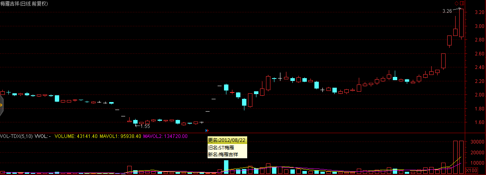
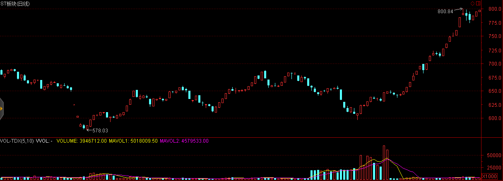
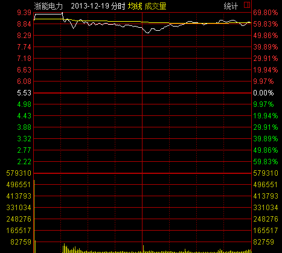
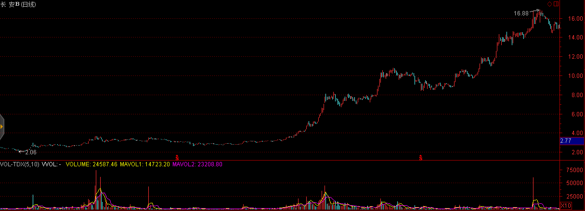
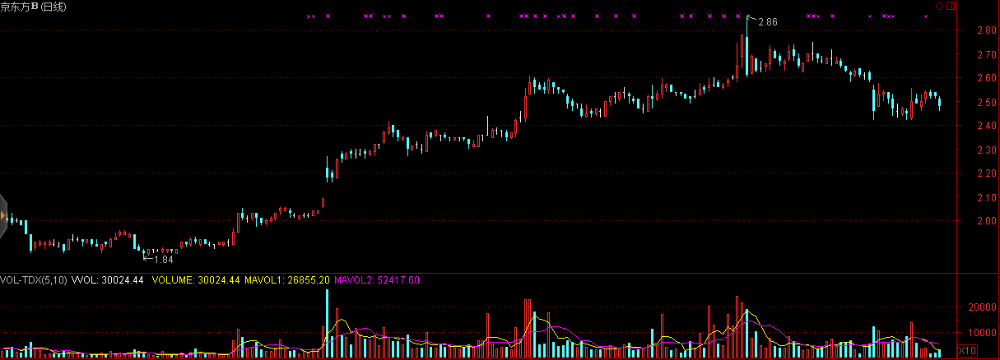

中国金融市场的发展速度远快于国外金融市场，这导致国民素质与金融市场的巨大脱节，对于金融市场理解不透彻，容易进入误区，产生错觉，进而导致非理性的投资决策。
中国证券市场的一大特点就是散户化，虽然随着近些年机构投资的大量介入散户化程度呈下降态势，但散户的市场参与人数占比仍然远高于成熟市场平均水平。散户化市场的表现形式有：
以及其他一系列行为金融学中噪音交易者模型所表现出的特征。
这些现象存在较多的套利机会，以跨市套利为例，我们选择分别在A股市场以及其他成熟市场（如H股、美股等）上市的股票作为套利对象。当与之相关的新信息进入这个市场中时，反映不足的现象在散户化程度较高的市场明显强于成熟市场，因而可以通过在A股市场追赶趋势，在成熟市场反响对冲实现套利。
这一现象在乳制品行业三聚氰胺风波，上海医药的财务造假传闻等事件中均有所体现。
在中国股票市场中，不仅好的题材能够获得投资者青睐，就连好的名称也能够获得超额收益。 2012年8月22日，ST梅雁(600868.SH)摘帽后将梅雁股份更名为梅雁吉祥，这一“吉祥”为梅雁股份带来了连续三个一字涨停，股价涨幅达33%

2012年11月7日上午，奥巴马获得了2012美国大选胜利，受此消息影响，新能源板块有不错的表现，然而最令人瞠目结舌的是，与之风马牛不相及的奥马电器(002668.SZ)仅因名称相近也获得了市场投资者的青睐，在大盘下跌的背景下下午冲高上升超过1%
奶茶与强哥的分手八卦居然使得天泽信息(300209.SZ)躺著中枪。其股价与新年伊始便触及跌停。
首日开盘买首开股份(600376.SH)，这句话似乎在2015年再次得到了印证，其股价在2015年第一个交易日强势涨停，紧随其后的还有首创股份(600008.SH)和首钢股份(000959.SZ)。
在看到中国金融市场尚未达到成熟的同时，我们同时也要认识到，中国金融市场在制度建设的过程中存在着大量套利机会。在本节的前半部分，我们首先回顾已经发生的制度套利案例。
所谓股权分置，是指A股市场上的上市公司的股份分为流通股与非流通股。股东所持向社会公开发行的股份，且能在证券交易所上市交易，称为流通股；而公开发行前股份暂不上市交易，称为非流通股。由于中国证券市场早年扮演着为国企改革服务的角色，这种同一上市公司股份分为流通股和非流通股的股权分置状况，为中国内地证券市场所独有。
利用股权分置改革套利主要分为两方面，即通过持有非流通股进行套利和持有流通股进行套利。在股权分置改革之前非流通股由于不能上市交易，其市场价值较流通股有着巨大的折价。因而通过早年以极低的价格低价获取非流通股，等待股权分置改革上市流通后获利正是富有远见地看到了同股同权的本质，这即使是在补偿了流通股东之后仍然获利巨大。
与此同时，在股权分置改革之前以合理的价格购入流通股也能够获得利益。由于股改要求非流通股东以多种方式给予流通股东以补偿，而且类似的补偿并不会产生新增股份摊薄公司收益，因而流通股东借股权分置改革获得了额外的来自非流通股东的利益。
我们再来看几则未来即将发生或者正在发生的机会。
中国股市目前正处在市场扩容期与建设期，加之新股发行的审核制，使得上市资源供不应求，借壳上市、资产重组成了待上市公司更为便捷的上市通道，这也使得主业受困的企业获得了乌鸡变凤凰的机遇。这其中最经典的案例莫过于广发证券借壳延边公路了，从2006年10月19日停牌至2010年2月12日复牌，首日开盘411%的涨幅使投资者赚得盆满钵满。因而在2011年以前，重组预期、借壳预期使得这些公司享受了很大的估值溢价。然而与之相对立的是，借壳上市资产重组过程中存在的监管以及规则漏洞使得侵害投资者行为愈演愈烈，其中包括内幕交易、虚高资产价格、虚增企业收入等行为引起了监管部门的警觉，2011年8月，证监会发布《关于修改上市公司重大资产重组与配套融资相关规定的决定》，而该项政策的核心是借壳重组与IPO趋同，大幅度提高了审核门槛。2012年7月29日沪深交易所发布《关于完善上海证券交易所上市公司退市制度的方案(征求意见稿)》和《关于改进和完善主机板、中小企业板上市公司退市制度的方案(征求意见稿)》，退市新规大大增强了ST股退市风险，并对ST股日常交易进行严格限制，投资者单日买入单档股票不得超过50万股。受此影响，ST板块遭遇重创。在2015年1月30日发布的修订版中，更强调主动退市公司申请重新上市受“优待”，完善退市整理期交易投资者适当性安排，将50万以下资产的中小散户拒之门外。

不过正是这般严格的退市政策使得绝处逢生的摘帽摘星股获得了估值修复机遇，个股摘帽摘星后，退市风险与参与限制得意解除，这降低了股票短期的退市风险，并提升了股票的流动性，以2014年摘帽摘星股的表现看，摘帽前两个月的涨幅惊人，不过随著摘帽预期的落实，在摘帽当天普遍呈现冲高回落的态势。
| 股票代码 | 股票名称 | 摘帽日期 | 摘帽前2个月涨幅 | 当日开盘涨幅 | 当日收盘涨幅 |
| 002047 | ST成霖 | 2014.1.13 | 0.0677 | 0 | -0.0682 |
| 600538 | ST国发 | 2014.2.24 | 0.1489 | -0.0248 | -0.0833 |
| 600961 | ST株冶 | 2014.3.6 | 0.0954 | 0.023 | 0.0993 |
| 600760 | ST黑豹 | 2014.3.7 | 0.1202 | 0.1 | 0.1 |
| 600155 | ST宝硕 | 2014.3.10 | 0.3194 | 0.0852 | 0.1004 |
| 600603 | ST兴业 | 2014.3.10 | 0.1863 | 0.0758 | 0.1005 |
| 000908 | ST天一 | 2014.3.11 | 0.4226 | 0.0268 | 0.0268 |
| 000018 | ST中冠A | 2014.3.13 | 0.1402 | 0.0431 | 0.0049 |
| 600707 | ST彩虹 | 2014.3.14 | 0.1504 | 0 | -0.0418 |
| 002161 | ST上控 | 2014.3.17 | 0.0642 | 0.0013 | 0.013 |
| 000555 | ST太光 | 2014.3.19 | 0.1726 | 0.0334 | -0.0363 |
| 000717 | ST韶钢 | 2014.3.24 | 0.1034 | 0.026 | 0 |
| 600617 | ST联华 | 2014.3.25 | 0.0064 | -0.0171 | -0.1001 |
| 600980 | ST北磁 | 2014.3.26 | 0.1392 | -0.0591 | -0.007 |
| 000056 | ST国商 | 2014.3.31 | -0.053 | 0.0154 | -0.0769 |
| 002265 | ST西仪 | 2014.4.3 | 0.1737 | 0.0316 | -0.0506 |
| 601919 | ST远洋 | 2014.4.3 | 0.0857 | -0.0056 | -0.05 |
| 000958 | ST东热 | 2014.4.3 | 0.5651 | 0.0368 | -0.0534 |
| 600769 | ST祥龙 | 2014.4.4 | 0.1794 | -0.0385 | 0.0018 |
| 000902 | ST中服 | 2014.4.10 | 0.0089 | 0.0242 | -0.0135 |
| 000898 | ST鞍钢 | 2014.4.10 | 0.113 | -0.0034 | 0.1017 |
| 600234 | ST山水 | 2014.4.21 | 0.4107 | 0.0203 | 0.1 |
| 000035 | ST科健 | 2014.4.22 | 0.0324 | 0.0306 | 0.0891 |
| 000617 | ST济柴 | 2014.4.23 | 0.0833 | 0.0193 | -0.0277 |
| 600358 | ST联合 | 2014.4.24 | 0.3808 | 0.0085 | -0.0393 |
| 600579 | ST黄海 | 2014.4.29 | 0.1551 | -0.1 | -0.0743 |
| 600555 | *ST九龙 | 2014.4.30 | 0.0929 | -0.0174 | -0.0087 |
| 600698 | ST轻骑 | 2014.5.5 | 0.0831 | -0.0108 | -0.0994 |
| 平均 | 0.1589 | 0.0116 | -0.0033 |
中国市场结构是一个倒金字塔，美国是一个正金字塔。美国纽交所有2300家挂牌公司，然后是纳斯达克，有2500个，再往下是OTCBB和粉单市场，大致将近1万家挂牌公司，再往下是一个灰色市场，有6万个挂牌公司，尽管在这些市场上挂牌的公司与交易所上市的公司无法同日而语，但它们服务于低层次企业，实现了很好的分化。而中国正好相反，主板有1400家挂牌公司中小板是700个，创业板是355个，中关村代办转让系统原来只有100多个，今年以来多了些，当然中国还有很多区域性产权交易所，但发展不太规范，良莠不齐。所以要加快三板和四板的市场建设，尤其是「新三板」。
2014年8月25日，新三版做市交易制度正式上线，这标志着新三板交易的放开。根据以往经验，在任何一个市场建立的初期往往存在着大量的无效以及套利机会。
2013年以前，中国的信用债市场奇迹般地保持着「零违约」的记录，这种在政府保护与监管下的扭曲导致信用基差被无限收窄，信用体系建设落后。随着2014年几例债券违约事件的出现以及信用体系的加紧建设，未来信用基差也将随之扩大，信用定价体系的完善以及信用定价重估的过程将会带来巨大的套利机会。
股指期货，股指期权，个股期货，个股期权的相继建立将会为市场提供丰富的对冲工具，至此我们介绍的诸如股票多空仓策略等在中国A股市场将会成为可能。
欧式期权：通常这类期权在发行时会设定到期日以及行权价格，买入期权的一方必须在期权到期日当天才能行使的期权。
在讨论这个问题之前首先需要明确一下假设：
1.无摩擦的市场
2.市场的完全性
3.投资者的理性
4.股票价格服从对数正态分布
5.波动率和利率是常数
6.股票不分红
7.期权发行数量足够大以至于全部行权之后会对股本数量产生巨大影响
这些假设前5条是从BS定价模型照搬过来的，第6条是为了简化之后的讨论（事实上分红的考虑没有多大现实价值，处理起来相对容易而且对我们这里的讨论没什么影响），第7条则与BS模型不同，在这里我们要重点考虑发行期权后对公司每股价值可能产生的稀释作用。另外值得注意的是，我们的假设完全将行为方面的因素剖里出去了，类似发行权证的激励作用以及市场潜在的非理性因素不在我们的讨论范围之中，公司的股价完全服从对数布朗运动，将市场参与者理解为精明的投资人。
于是乎一个看似符合直觉的结论出现了：公司大量发行期权将会导致公司每股价值的大幅降低，比如公司原先有100万股股票，某一天突然发行了100万股股票的认购权证，于是如果市场有效的话，投资者就会迅速预期到将来股票价格的变动，所以当这一消息公布后，股票价格会迅速下跌50%左右。
事实上从发行欧式期权到最终行权（如果行权了）的过程中公司的总价值并不是保持不变的，相反将会因期权发行费用以及行权时向公司支付的行权费用这两项收入而大幅提升。进一步地，最终公司价值提升程度与最初发行期权时设定的行权价格并没有多大联系，因为在有效市场中，低行权价格将会产生高购买需求，因而推升发行价格。
所以一旦公司基于市场均衡结果敲定了发行价格，由于上述两项收入的补偿，即使最终总股本大幅提升也不会对公司股价造成如此巨大的影响。
接下来需要讨论的问题是，发行权证后对公司股价是一点影响也没有呢还是有一点点影响的？等价地，根据市场均衡得出的期权价格是否与使用BS定价公式所得出的期权价格相同？
无需进行严格的数学推导，我们从基本的无套利市场理念便可以提出猜想：这两价格是相同的！因为它们的确是基于一样的假设、价格确定的过程都是基于无套利或者说是均衡市场的思想，可以遇见无论公司最终发行多少欧式期权，其股价将丝毫不会理会这一行为。
至此，我们上述的讨论终于与Williams,1938; Modigliani and Miller,1958提出的建立在市场有效的假设下M&M定理达成一致了：在给定公司投资策略不变的前提下，公司的市场价值不受公司资本结构的印象（如果证券价格准确地体现了体现了公司未来的现金收入流量的值，那么不管发行的是什么类型的证券，只要把公司发行的所有证券的市场价值加在一起，一定等于这个公司未来利润的现值）
一个有趣的想法是，随著大量股票期权的发行，行权价格将会对公司股价的未来走势产生“吸附”作用，股价低于行权价格过多则会有一股向上的推力，因为这意味著，原有股东将因为公司发行期权所获收入而提升每股价值；而当股票价格位于行权价格之上时则会有一股向下的阻力，因为这意味著，如果到期日股价维持则所有期权将会行权，公司每股价值将会在很大程度上被因此摊薄，股价也就自然出现“涨不动的状态”。综上所述，公司股价运行区间并不会离行权价格太远。
基于这个错误宪法上述讨论就会产生问题了，因为BS模型的假设其中有一条即是：股票价格服从对数正态分布，然而通过这个错误想法得出在公司发行期权之后，股票价格的概率分布图将会显示出接近行权价格概率密度大，远离行权价格概率密度小的特征，其现状彷佛是被向行权价格处挤压了的一般。这样的股票价格概率分布是不满足BS模型的，而且一个进一步的猜想是，当行权价格与股票价格较为接近时，其分布函数将会显示出“瘦尾”的特征，波动率反而比正态分布还要小，表明BS模型所暗示的价格高估了期权本身的真实价值。这样在市场均衡状态下得出的真实期权费用常常会小于通过经典模型所得出的结论了。
由于历史原因，我国的B股市场一直是管理层手中一个烫手的山芋，流动性问题导致了B股价格较A股价格普遍折价50%。目前市场上仍然存在很大的价差和套利空间。
对于跨市套利如果无法实现证券的跨市转让则很难消除两地差价，这在中国A股市场和B股市场之间也长期存在，然而国际板的推出将会伴随B股历史遗留问题的解决，目前处理B股问题的三种方式。
转板至A股上市意味著所有B股的存续股都将转换为A股股份，这将瞬间抹平A、B股之间的价差，然而转板将会受到A股投资者强烈的反对而很难得以实施。目前唯有纯B股上市公司东电B股(900949.SH)被浙能电力借壳并顺利转板。从上市首日60%的涨幅可以看出，一旦B股实现转板将为投资者带来巨额收益。

转板至H股上市则为深圳B股提供了另一个解决途径，这一方案的可行之处在于两者交易的币种同为港币，而且转板H股并不会为A股股票带来额外的供给压力，因而较为容易事实。截止2014年年底，共有3家深圳B股企业成功转板，万科B(200002.SZ)、中集B(200039.SZ)、丽珠B(200513.SZ)
回购注销最终要约收购是最为直接的一种解决方式，主要由大股东出资从二级市场购回已发行的B股进行注销，当存续B股少于一定数量时可以依照规则启动要约收购程式，这一解决方式对大股东的资金实力提出了很高的要求，而且回购过程中如出现股价的大幅上升将会对最终回购效果产生很大的影响。长安汽车于2011年12月6日发布《关于回购公司部分境内上市外资股（B股）股份的预案》，拟以公司自有资金公司以不高于 3.76 港元/股回购资金总额不超过 6.1 亿港元及最多不超过 26,985.9 万股 B 股。约占B股总股本的25.14%。受此消息影响，长安B复牌后3日股价上涨近30%，经过短暂调整后再度稳步上扬，使得公司的回购数量大幅低于预期。2012年3月31日，长安汽车发布《关于回购部分境内上市外资股（B股）股份实施完毕及股份变动报告书》，公司累计回购B 股数量为171,596,438股，仅实现预期回购数量的63.5%

同样的情况发生在京东方B(200725.SZ)，公司与2014年7月29日发布回购公告后股价开盘即上升6%，随后一路上扬最高至2.86港元/股，最高涨幅达36.84%，此时股价已远高于回购区间上限，回购事项不得不搁置。

我国证券市场现行的涨跌停板制度是1996年12月13日发布，1996年12月26日开始实施的，旨在保护广大投资者利益，保持市场稳定，进一步推进市场的规范化。制度规定，除上市首日之外，股票（含A、B股）、基金类证券在一个交易日内的交易价格相对上一交易日收市价格的涨跌幅度不得超过10％，超过涨跌限价的委托为无效委托。
涨跌停板制度的限价措施使得股票价格走势具有更强的趋势型。通过对2010年1月1日-2013年12月31日的所有中国A股股票日内数据进行回测，我们发现所有11,013例当天收盘涨停但非「一字板」的股票第二天的期望涨幅为1.7167%，所有3,389例当天收盘跌停但非「一字板」的股票第二天的期望涨幅为-1.6508%
如果股票在收盘时并未封住涨停或者跌停，情况又有所变化。我们发现所有6765例当天涨停过但收盘未在涨停价位的案例第二天的期望涨幅为-0.3561%，其中748例收盘涨幅在9%以上的股票第二天的期望涨幅为-0.8441%。所有5034例当天跌停过但收盘未在跌停价位的案例第二天的期望涨幅为0.0654%，其中1221例收盘跌幅在9%以上的股票第二天的期望涨幅为0.0445%。
自1995年1月1日起，为了保证股票市场的稳定，防止过度投机，股市实行「T＋1」交易制度，当日买进的股票，要到下一个交易日才能卖出。这一制度给日内价格走势带来了严重的扭曲，但却为利用融资融券等渠道的套利提供了可能。
封闭式基金是指基金规模在发行前已确定、在发行完毕后的规定期限内固定不变并在证券市场上交易的投资基金。上世纪90年代中国基金行业兴起了第一轮基金扩张潮，但过快的扩张速度为基金的统一监管带来了较大的困难。1993年9月至1998年上半年，未再批准设立过各类基金，国内基金的发行陷入停滞状态。随著监管条例的明晰以及各大基金公司的相继成立，封闭式基金在类似产品供给相对匮乏的年代取得了蓬勃发展，成立了54只封闭式基金，筹资总额达807亿元。
由于封闭式基金规模确定，在封闭期无法进行申购与赎回，只能在二级市场交易，因而交易价格受当时市场供求关系的限制，当交易价格偏离净值时，没有合适的套利机制能够对交易价格进行纠偏。从2000年开始，基金市场的扩容以及互联网泡沫的破灭使封闭式基金处于普遍的折价状态，投资者发现按照净值认购新发行的封闭式基金不如在二级市场以折价购买存量基金份额。2002年9月后至今，没有一只传统封闭式基金在投资基金市场发行。有些基金虽然名义上发行成功，实则大部分被承销商包销。基金科瑞高达4.39亿份（银丰也有1.3亿份）的余额被主承销商包销。基金久嘉拜大盘反弹之赐发行还算顺利，但由于原发起人之一的新疆证券突然退出，被迫延迟40天上市。小盘改制基金的扩募情况也相当糟糕，如基金景业、基金天华、基金安久、基金融鑫的弃配率分别高达98.47%、90.4%、94.44%、95.27%。曾经风光无限的小盘基金扩募遭到了市场的遗弃。
然而封闭式基金在封闭期不受申购赎回的干扰，规模保持稳定，也就意味著基金经理可支配资金不受上一期业绩影响，这就弥补了套利者的一大弱点，也就更容易执行一些高回报低风险的稳健回报策略。通过回测过去一段时间的净值表现可以发现，封闭式基金的平均收益高于开放式基金。
虽然在基金封闭期，即使基金交易价格折价也无法通过净值赎回进行套利，然而一旦封闭期结束，这些基金将转为开放式基金，这就为折价套利提供了可行性，因而可以预见随著封闭期到期日的临近，二级市场交易价格将逐渐收敛到基金净值。对于封闭期还剩5年折价率20%的封闭式基金而言，如果扣除管理费、托管费等各项费用1.8%/年，则相当于聘请了一个免费的专业管理者，还获得了2.5%/年的折价回归。
对于以来管理费用的基金公司而言，现金分红会使得基金公司管理的资产减少，所以管理费减少，因而基金经理对于分红并没有激励。基金法为封闭式基金的持有人提供了一个分红的法律保护，在一个年度内封闭式基金的已实现净收益的90%以上必须用于分红，基金法为封闭式基金的持有人提供了一个分红的法律保护，那就是说，一个年度内，封闭式基金的已实现净收益的90%以上必须用于分红。
由于在2001年-2005年市场整体处于下跌过程中，封闭式基金无红可分，这一分红条款逐渐被投资者淡忘。2006-2007年市场峰回路转，封闭式基金净值也显著提升，不少基金净值超过2元，在保持一定股票换手率的前提下，这部分基金已经触发分红条款。假设在分红日之前基金净值为2元，二级市场的折价率为20%，即交易价格为1.6元。该基金每份分红1元，则分红之后，基金净值为1元，按照20%的折价率算，交易价格为0.8元，而投资者的实际持有成本在分红后仅为0.6元，上述套利空间对于仅有几天的市场波动风险而言是相当可观的，因而封闭式基金在分红前普遍会产生一波“分红行情”。
2007年，沉寂五年之久的封闭式基金市场迎来了新鲜血液，以大成优选和建信优势为代表的创新型封闭式基金成为市场焦点。这类基金除了在基金条款上基本继承了封闭式基金外，还派生出了许多创新条款，如更短的封闭期，更灵活的封闭政策等，使得这类基金的销售一度处于火爆状态。大成优选(150002)的“救生艇”条款设定，如果大成优选的折价率连续50个交易日在20%以上，该基金公司将召开持有人大会，审议提前封转开的有关事宜。2009年2月16日到2009年4月13日，大成优选已经连续40个交易日折价率在20%以上，然而2009年4月14日，大成优选的折价率降到了19.88%，条款无法触发。建信优势(150003)也约定只要在基金生效满一年后连续六十个交易日折价率超过15%，就将召开基金持有人大会，审议将基金转为LOF基金的相关事宜。从2009年6月26日到2009年9月15日，建信优势动力连续58个交易日折价率高于15%，2009年9月16日，建信优势动力在冲高0.726元后回落，最终以0.720元收盘。当日晚间约七时许建信基金网站公布当日该基金净值0.847元，计算出当日该基金折价率约为14.99%，事实上在预期封转开临近时，由于折价套利空间很大，这些基金在二级市场上会吸引套利资金的进场，从而抬高二级市场交易价格，这也会导致折价率收窄，进而导致封转开条款无法触发。
当进行封闭式基金套利时，对于快到期的封闭式基金套利计算应该更加精确，除了考虑折价因素外还应密切关注赎回、时间成本以及市场波动。以2014年到期的基金汉兴与基金景福为例，这两档基金在封闭期结束后均有15-30天的封转开过渡期，基金持有者除了要承受期间的市场波动外，还需承担0.5%的赎回费用以及过渡期资金占用的时间成本。
分级基金又叫“结构型基金”，是指在一个投资组合下，通过对基金收益或净资产的分解，形成两级（或多级）风险收益表现有一定差异化基金份额的基金品种。它的主要特点是将基金产品分为两类份额，并分别给予不同的收益分配。从目前已经成立和正在发行的分级基金来看，通常分为低风险收益端（约定收益份额）子基金和高风险收益端（杠杆份额）子基金两类份额。
示例：以某分级基金产品X（X称为母基金）为例，分为A份额（约定收益份额）和B份额（杠杆份额），A份额约定一定的收益率，基金X扣除A份额的本金及应计收益后的全部剩余资产归入B份额，亏损以B份额的资产净值为限由B份额持有人承担。当X的整体净值下跌时，B份额的净值优先下跌；相对应的，当X的整体净值上升时，B份额的净值也将相对于A份额优先上升。优先份额一般可以优先获得分配基准收益,进取份额最大化补偿优先份额的本金及基准收益，进取份额通常以较大程度参与剩余收益分配或者承担损失而获得一定的杠杆。它拥有更为复杂的内部资本结构，非线性收益特征使其隐含期权。通俗的解释就是，A份额和B份额的资产作为一个整体投资，其中持有B份额的人每年向A份额的持有人支付约定利息，至于支付利息后的总体投资盈亏在都由B份额承担。
母基金净值与子基金净值的关系：母基金净值 = A类份额子基金净值 A份额所占比例 + B类份额子基金净值 B份额所占比例
根据分级母基金的投资性质，母基金可分为分级股票型基金（其中多数为分级指数基金）、分级债券基金。分级债券基金又可分为纯债分级基金和混合债分级基金，区别在于纯债基金不能投资于股票，混合债券基金可用不高于20%的资产投资股票。根据分级子基金的性质，子基金中的A类份额可分为有期限A类约定收益份额基金、永续型A类约定收益份额基金；子基金中的B类份额又称为杠杆基金。杠杆基金可分为股票型B类杠杆份额基金（其中多数为杠杆指数基金）、债券型B类杠杆份额基金。
到点折算：到点折算，也称“不定期折算”，通常分为“向下到点折算”和“向上到点折算”，是分级股基常见的一种机制。其具体含义是，进取份额净值跌至阀值或者母基金份额净值高于阀值，稳健份额、进取份额、母基金份额净值均被调整为1元，调整后各类份额数量按比例增减，稳健和进取份额按初始比例保留，配对后的剩余部分将会转化为母基金场内份额，分配给相应份额持有者。
而向下到点折算中，当进取份额低于阀值后，稳健份额通过折算所获得的母基金份额可以赎回，相当于部分“封转开”，即以相对净值折价买入的稳健份额可以大部分按净值变现，获取一定套利收益；而进取份额净值杠杆将回落至初始杠杆水准，溢价率相对降低，复权价格下降，持有者将遭受一定损失。
向下到点折算有其存在的意义。如果没有到点折算机制，则母基金净值下跌到一定程度，进取份额净值可能跌至0，则稳健份额的约定收益无法实现，且继续下跌会导致稳健份额净值受损，稳健份额便不那么“稳健”了。而到点折算机制下，由于进取份额净值归1，又能继续承担支付约定收益的义务，则折算后的稳健份额约定收益仍能保证。只要投资者在到点第2页，共19页折算发生后赎回母基金份额，则其原先持有的稳健份额净值没有受损，这样一来到点折算机制使得稳健份额基本“免疫”了净值受损的风险。
示例：以银华中证等权90指数为例。该基金于2012年8月31日触发向下折算阀值，即进取份额净值达到0.250元，进取份额合并（相当于资本市场中的缩小股本）使净值回到1元。与此同时，稳健份额为了保持与进取份额的1:1配比，在产生相应数额净值为1元的新稳健份额的同时，多余部分将折算为净值为1元的母基金。
辅以具体数字说明，假设折算时进取份额净值为0.250元，稳健份额净值为1.000元，并且折算前的老银华中证母基金的份额为10,000份，净值为0.675元（进取、稳健份额各5,000份）折算后，进取份额净值提升至1元，份额相应缩减至1,250份，稳健份额为了保持与进取份额的1:1配比，且净值为1元，则5,000份老稳健份额中的1,250份继续留在场 内，其余的3,750份折算成3,750份净值为1元的新银华中证母基金
到期折算：分级基金按固定周期进行折算，通常为一年期或三年期。折算后，三类份额或者A类份额将"净值归一"，超过1元部分返还给投资者等额的母基金份额。对于无存续期的分级基金，A、B两类份额上市交易，但不可单独申赎。通过到期折算，A类份额的约定收益能定期折算成母基金，投资者可通过申赎母基金来获取约定收益。这就解决了因二级市场存在折溢价，导致A类份额的价值无法体现的问题。
示例：以国联安双禧中证100指数分级基金为例。该基金将于2013年4月进行三年一次的到期折算，其中双禧A将一次性获得3年约定收益合计为17.25%。根据其到期折算原则：三类份额净值归1，双禧A和双禧B的份额比例始终保持4：6，当市场下行使得双禧B净值低于1元时，持有人除了获得约定的0.1725元收益，双禧A多出需要折算的净值部分，也将折算成双禧100归持有人所有。
随著IPO的再度开启，以及新股不败神话的上演，打新股逐渐成为了低风险资金追逐的对象，然而对于一天同时发行多只新股的现象，不少投资者心中有这样的疑问：到底是集中打一只新股还是分散打多只？新股应该如何申购更好呢？
首先我们需要明确新股网上配售政策采用的是摇号的形式，而配号原则是单个帐户单次申购连续配号，也就是说，如果我们在同一个新股上申购多个单位，系统将配售连续的“抽奖号码”。
这里为了简化分析，我们假设在同一天上市有5只新股，这些新股的中签率都是10%，而且这些新股如果中签能带来的盈利相同（假设都为50%），进一步假设我们现有资金相当于五个新股申购单位，我们来分析分散申购和集中申购两种策略的情况：
1、分散申购（每只新股各申购一个号）
盈利期望：25%
标准差：33.54%
Sharpe Ratio：0.75
2、集中申购（集中申购一只新股）
盈利期望：25%
标准差：25%
Sharpe Ratio：1
事实上，现行的连续配号政策实际上是一种伪随机的抽奖方式，上述两种策略虽然有著相同的盈利期望，通过从策略1向策略2的改变可以提升申购新股的Sharpe Ratio达30%以上，对资金收益有较好的平滑效果。
当然如果资金量较大触及申购上限的投资者而言只能被迫分散申购了，但仍以尽量减少申购个股数量为宜，再者直接参与网下配售吧~